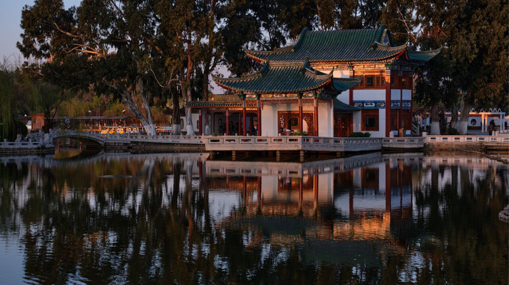

云南大学
大观楼地处昆明城西南，濒临滇池草海北滨，与苍秀端岩的太华山隔水相望，又称“近华浦”。
昆明大观楼建于清代，是历史较短的中国名楼，还没有被广大旅游者认识。清康熙年间建大观楼，乾隆年间孙髯翁长联问世，“五百里滇池奔来眼底”，“数千年往事注到心头”，才雄气猛，气势磅碍，光彩夺目。
每逢秋季，大观楼正是昆明赏菊的最佳时节，此时，大观楼公园菊花满地，五彩缤纷。
当然，大观楼公园内的银杏叶也染黄了整个公园，银杏叶随风飘动，散落在地上，带来满满的秋意。除此之外，夕阳西下，坐一坐园内的摩天轮，看看秋天的滇池，也是一种别样的体验。
云南大学地球科学学院@2021~2022